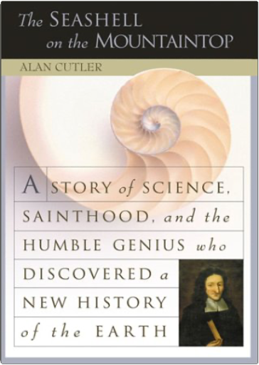

Midnight In the Garden of Good and EvilJohn Berendt  The best non-fiction novel since "In Cold Blood" is a true story of intrigue, murder, forgery and eccentricity set in the steamy, surreal atmosphere of Savannah, Georgia. The unpredictable twists and turns of a murder case are skilfully interwoven with a hugely entertaining first-person account of life in this isolated remnant of the Old South.  Short History of the WorldGeoffrey Blainey Short History of the WorldGeoffrey Blainey A superb history of the world's people during the last four million years, beginning before the human race moved out of Africa to explore and settle the other continents. Mr. Blainey explores the development of technology and skills, the rise of major religions, and the role of geography, considering both the larger patterns and the individual nature of history. A delightful read, gracefully written, and full of odd and interesting pieces of information as well as thoughtful comparisons that span both time and space. —William L. O'Neill  Short History of Nearly EverythingBill Bryson Short History of Nearly EverythingBill Bryson Bill Bryson describes himself as a reluctant traveller: but even when he stays safely in his own study at home, he can't contain his curiosity about the world around him. A Short History of Nearly Everything is his quest to find out everything that has happened from the Big Bang to the rise of civilization - how we got from there, being nothing at all, to here, being us. Bill Bryson's challenge is to take subjects that normally bore the pants off most of us, like geology, chemistry and particle physics, and see if there isn't some way to render them comprehensible to people who have never thought they could be interested in science. It's not so much about what we know, as about how we know what we know. How do we know what is in the centre of the Earth, or what a black hole is, or where the continents were 600 million years ago? How did anyone ever figure these things out? On his travels through time and space, he encounters a splendid collection of astonishingly eccentric, competitive, obsessive and foolish scientists, like the painfully shy Henry Cavendish who worked out many conundrums like how much the Earth weighed, but never bothered to tell anybody about many of his findings. In the company of such extraordinary people, Bill Bryson takes us with him on the ultimate eye-opening journey, and reveals the world in a way most of us have never seen it before.  Tao of PhysicsFritjof Capra Tao of PhysicsFritjof Capra The universe: an eternal cosmic dance of subatomic particles of relationships at once paradoxical, yet somehow unified.  Playing the Enemy: Nelson Mandela and the Game That Made a NationJohn Carlin Playing the Enemy: Nelson Mandela and the Game That Made a NationJohn Carlin In 1985, Nelson Mandela, then in prison for twenty-three years, set about winning over the fiercest proponents of apartheid, from his jailers to the head of South Africa’s military. First he earned his freedom and then he won the presidency in the nation’s first free election in 1994. But he knew that South Africa was still dangerously divided by almost fifty years of apartheid. If he couldn’t unite his country in a visceral, emotional way—and fast—it would collapse into chaos. He would need all the charisma and strategic acumen he had honed during half a century of activism, and he’d need a cause all South Africans could share. Mandela picked one of the more farfetched causes imaginable—the national rugby team, the Springboks, who would host the sport’s World Cup in 1995.  The Practical Woodworker: A Comprehensive Step-by-Step Course in Working with WoodStephen Corbett The Practical Woodworker: A Comprehensive Step-by-Step Course in Working with WoodStephen Corbett This is the complete practical woodworking book - a definitive reference guide for the beginner and the accomplished woodworking enthusiast alike. It is shown in 1200 photographs and diagrams, with clear and easy-to-follow instructions. It is packed with information including a guide to timber, directions on buying and using hand and power tools, and advice for setting up your workshop. It offers everything you need to know is explained, such as the principles of ergonomics, planning, design and construction. You can learn about fixings and fastenings, basic and advanced techniques, making joints and wood finishing. It features over 20 beautiful projects to develop your skills, including a storage chest, CD rack and bookcase. Wood is one of the oldest known natural resources and its universal appeal remains timeless. As every woodworker will testify, to work with this material is to understand its subtlety and to appreciate its amazing versatility. This comprehensive practical book demonstrates the basic techniques of woodworking, providing the foundation on which to build your skills and knowledge. It begins with an introduction to timber and a guide to tools. Essential advice on getting started is given, as well as in-depth guides to fixings and fastening, joints, and advanced woodworking techniques. There are also 20 step-by-step projects from basic tasks, such as a wine rack, picture frame or bookshelf, to complex ventures for experts, such as a bedside cabinet, butcher's block or dining table. The Seashell on the Mountaintop: A Story of Science, Sainthood, and the Humble Genius Who Discovered a New History of the EarthAlan Cutler In the bestselling tradition of The Map that Changed the World and Longitude comes the tale of a seventeenth-century scientist-turned-priest who forever changed our understanding of the Earth and created a new field of science. Hypnotism: A HistoryDerek Forrest This work traces the history of hypnotism from its beginnings as "animal magnetism". It begins with a detailed description of Anton Mesmer's 1774 discovery and recounts the story of his life. The major alterations in Mesmer's theory made by a variety of early pioneers, including the supposed paranormal powers possessed by somnambulists, are then examined, with a fuller account of the tragedy of John Elliotson than has appeared elsewhere. James Braid's coining of the term "hypnotism" to replace "animal magnetism" introduces the modern era, and after an appreciation of Braid's work the dramatic demonstrations in Charcot's Clinic are described, with the subsequent exposure of his errors by Bernheim and others. The book concludes with an account of the therapeutic and experiment work of the 20th century and the practical ways in which hypnotism is being employed today. |
 Made with Delicious Library
Made with Delicious LibrarySpringfield, State zipflap congrotus delicious library Doddridge, Edward